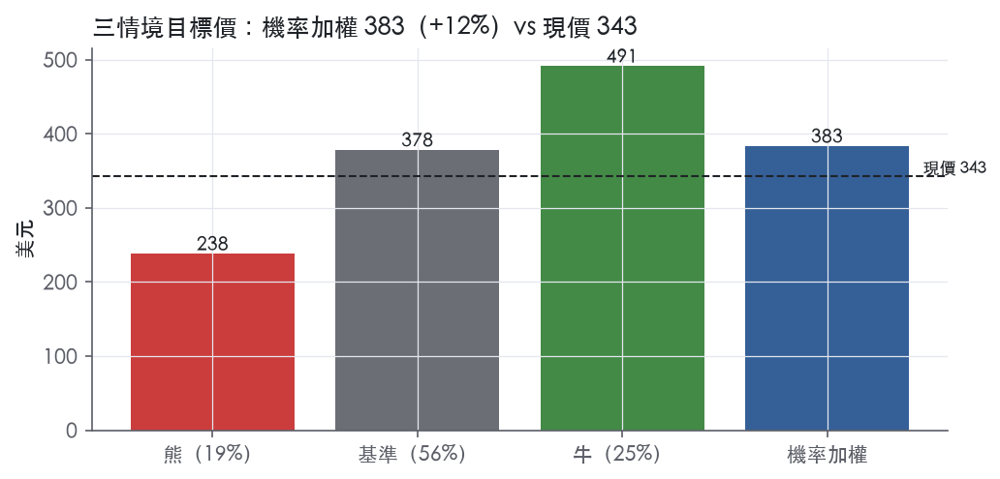
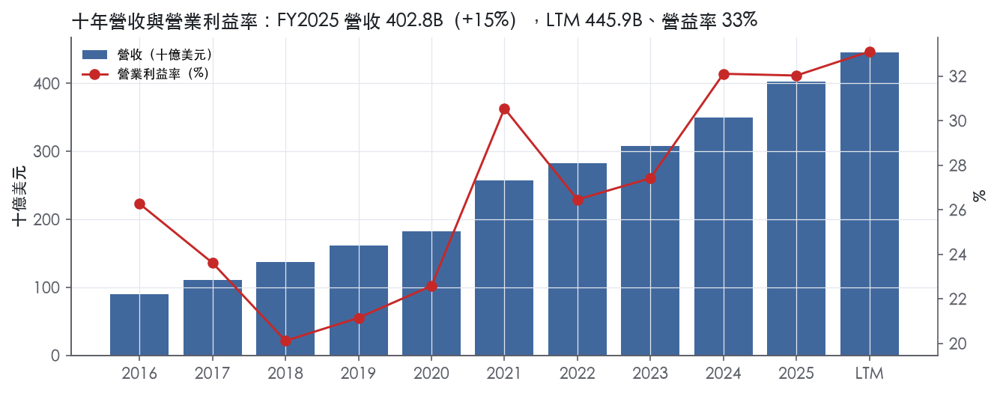
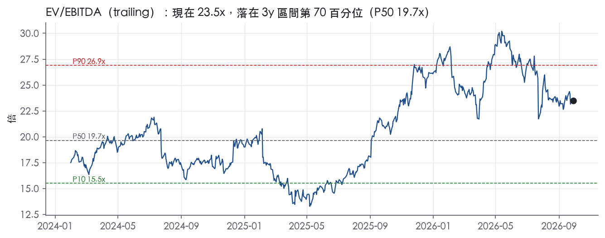
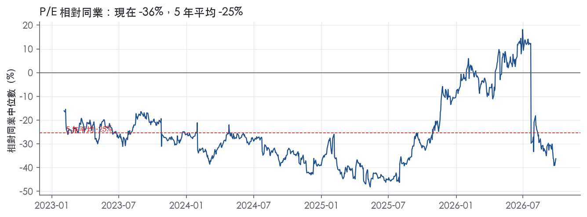
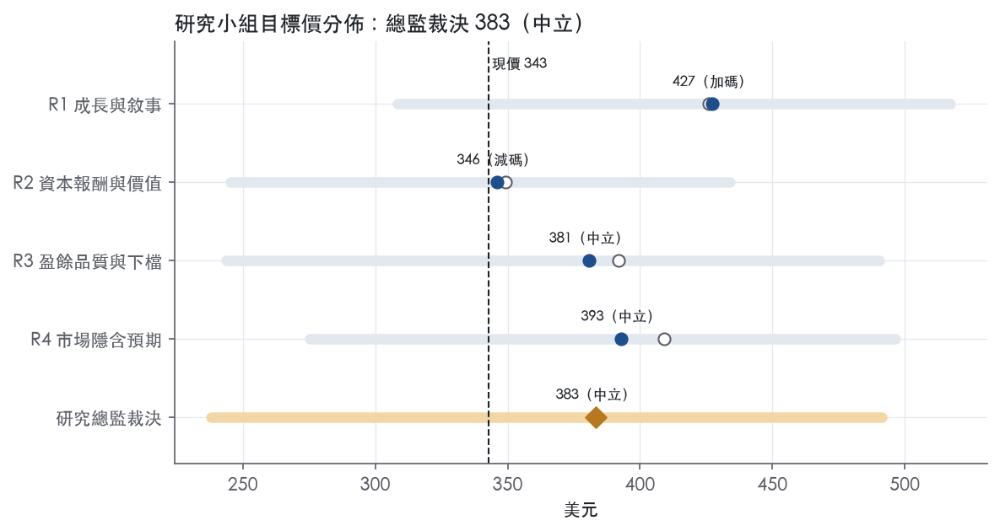
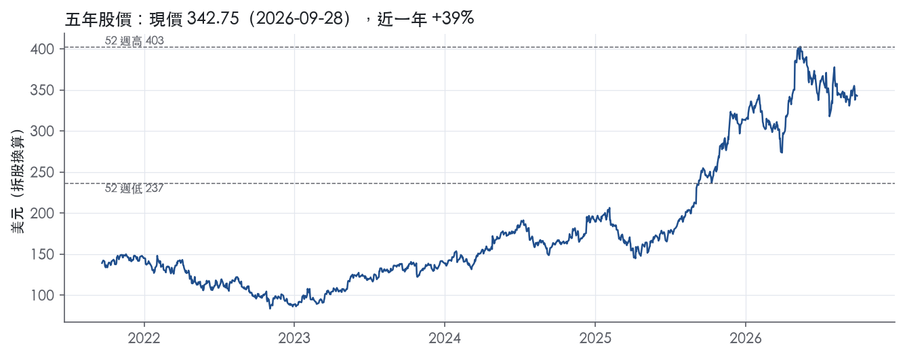

評等總表 › 通訊服務 › GOOGL
成長真、倍數收斂，報酬約等門檻，中立｜評等 中立｜目標價 383
| 評等 | 中立 |
| 12 個月目標價 | 383 美元 |
| 現價 | 342.75 美元（2026-09-28） |
| 預期報酬 | 股價 +11.8%＋股息 0.3%＝總報酬 +12.1%；同業籃門檻 10.2%，超額 +1.9% |
| 估值方法 | EV/EBITDA 21.5x，套在未來四季的EBITDA |
| 三情境 | 熊 238／基準 378／牛 491 |
| 研究流程 | 四位研究員兩輪辯論＋研究總監裁決 |
| 資料來源 | SEC EDGAR XBRL、Tiingo、FRED（全免費） |
成長真、倍數收斂，報酬約等門檻，中立（研究總監裁決，四位研究員兩輪辯論後）
評等 中立｜12 個月目標價 383 美元（總監三情境機率加權 380 與研究員中位數 387 各半）｜現價 342.75（2026-09-28）
預期報酬：股價 +11.8%＋股息 0.3%＝總報酬 +12.1%。同業籃門檻 10.2%，超額 +1.9%。
估值方法：EV/EBITDA 21.5x，套在未來四季的EBITDA。三情境：熊 238（19%）／基準 378（56%）／牛 491（25%）。
什麼會讓研究總監改變看法：FY2026 年報的 2027 資本支出指引持平或下降、且 10-Q 顯示 ATM 未動用，我把倍數上調到 22.5x 轉為加碼；FY2026Q3 Cloud 年增跌破 40% 或 Search & other 跌破 10%，我把基準換成熊情境驅動轉為看空。
| 過去四季（實際，FY2026Q2） | 未來四季 | 第 5–8 季 | 第 9–12 季 | |
|---|---|---|---|---|
| 營收（B） | 445.9B | 530.6B | 599.6B | 653.5B |
| 營收成長 | 20.1% | 19.0% | 13.0% | 9.0% |
| 營業利益率 | 33.1% | 33.0% | 32.5% | 32.0% |
| EPS（美元） | 19.91 | 11.58 | 12.65 | 13.32 |
| EPS 成長 | 112.4% | -41.8% | 9.2% | 5.3% |
| 每股股息（美元） | 0.85 | 0.85 | 0.85 | 0.85 |
| P/E（現價） | 17.2x | 29.6x | 27.1x | 25.7x |
| 股息殖利率（現價） | 0.3% | 0.2% | 0.2% | 0.2% |
過去四季為申報數字；預測為研究總監的假設、程式計算。倍數與殖利率都用現價計算，用來看現價對應各期獲利的高低。
| 情境 | 機率（歷史） | 故事 | 未來四季營收成長 | 第 5–8 季營益率 | 倍數 | 目標價 | 股價漲跌 |
|---|---|---|---|---|---|---|---|
| 熊 | 19%（18%） | 對應風險表第 1 條：Cloud 減速但 113.0B 採購承諾鎖住資本支出、折舊去槓桿；第 4 條非上市權益重估反轉與第 5 條 ATM 全額動用為放大器，倍數回到 3y P10 | 12.0% | 28.0% | 15.5x | 238 | -30.5% |
| 基準 | 56%（58%） | Cloud 減速但 backlog 撐住雙位數成長，折舊自第二年起壓利潤率，資本支出不見頂，溢價部分收斂 | 19.0% | 32.5% | 21.5x | 378 | 10.3% |
| 牛 | 25%（25%） | Cloud 維持六成以上、backlog 加速轉換、2027 資本支出指引給出見頂訊號且 ATM 閒置，倍數回到 1y P50 下方 | 24.0% | 35.0% | 25.0x | 491 | 43.4% |
目標價由程式依研究總監的驅動與倍數計算；機率由研究總監給定。括號內是歷史頻率：把這檔股票過去十年 12 個月報酬的波動形狀，置中在基準情境，結果落在各情境附近的比例。

四位研究員用不同方法各自估值，回應研究總監的質疑後交出第二輪，最後由總監逐點裁決。各研究員的主張見第七章，裁決理由見第八章，完整論證見《研究底稿》。
| 立場（一輪→二輪） | 加權目標價（一輪→二輪） | 評等（一輪→二輪） | 第二輪倍數 | 熊～牛目標價 | |
|---|---|---|---|---|---|
| R1 成長與敘事 | 看多→看多 | 426→427 | 加碼→加碼 | 24.0x | 308～517 |
| R2 資本報酬與價值 | 看空→看空 | 349→346 | 減碼→減碼 | 24.0x | 245～434 |
| R3 盈餘品質與下檔 | 中性→中性 | 392→381 | 中立→中立 | 21.5x | 244～490 |
| R4 市場隱含預期 | 看多→看多 | 409→393 | 加碼→中立 | 22.5x | 275～496 |
| 研究總監裁決 | 中性 | 383 | 中立 | 21.5x | 238～491 |
目標價由程式依各自的驅動與倍數計算；評等＝機率加權總報酬 − 同業籃門檻。
Alphabet 是以廣告為主要獲利引擎、雲端與 AI 基礎設施為第二成長曲線、並持有一組長期選擇權型「Other Bets」業務的科技集團。公司透過提供相關且具成本效益的線上廣告、為各規模企業客戶提供基礎設施／平台服務／應用程式的雲端解決方案，以及訂閱制產品、App 內購與裝置銷售等方式創造營收¹。FY2025 全年營收 402.84B 美元、年增 15.1%，LTM（至 FY2026Q2）已達 445.87B 美元，顯示成長仍在加速。客戶端橫跨一般消費者（Search、YouTube、Gmail、Maps、Play）、廣告主與發布商（透過 Google Ads、Ad Manager、Display & Video 360、Marketing Platform 等）、以及企業客戶（Google Cloud Platform、Workspace）¹。
公司分三大報導分部：Google Services、Google Cloud、Other Bets，另有未分攤的 Alphabet-level activities（主要是共用 AI 研發費用）¹。Google Services 是現金牛，FY2025 營業利益 139,404 百萬美元，較 FY2024 的 121,263 百萬美元成長 18.1B，主因營收增加，但部分被法律及其他事項費用、TAC 與內容取得成本增加抵銷¹。其下再分 Google 廣告（Search & other、YouTube properties、Google Network properties）與 Google 訂閱／平台／裝置（YouTube TV／Music／Premium、NFL Sunday Ticket、Google One、Google Play、Pixel 裝置等）¹。Google Cloud 是加速成長的分部，FY2025 營業利益 13,910 百萬美元，較 FY2024 的 6,112 百萬美元大增 7.8B，主因營收增加，部分被技術基礎設施使用成本與員工薪酬支出增加抵銷¹；產品線含 Google Cloud Platform（含企業 AI 基礎設施、Vertex AI、Gemini Enterprise）、Google Workspace、以及其他企業服務¹。Other Bets 是虧損擴大的長期賭注組合，FY2025 營業虧損擴大 3.1B，主因員工薪酬費用增加，大部分來自與 Waymo 相關的估值型薪酬費用增加¹。三分部各自佔營收比重，10-K 本身未在此段落直接揭露百分比，但依 8-K 揭露的單季數字可推算 Cloud 佔比正快速提升。
客戶主要分三群：一般消費者透過 Google 自有平台（Search、YouTube、Gmail、Maps、Play）使用免費或訂閱服務；廣告主與發布商透過 Google Ads、Ad Manager、Display & Video 360、Marketing Platform 等工具購買廣告版位；企業客戶則透過 Google Cloud Platform 與 Workspace 取得基礎設施、平台與應用服務¹。收入認列上，對 Google Network 版位的廣告收入，公司多數情況以毛額（gross basis）認列，即向客戶收取的金額列為營收，付給 Network 夥伴的金額列為營收成本；Google Play 的 App／App 內購收入則以淨額（net basis）認列，因為公司的履約義務是促成開發者與使用者間的交易並賺取服務費¹。雲端服務依消費量或訂閱兩種模式計費，合約期可能超過一年¹。地區別揭露上，10-K 未在此節提供各地區營收占比的具體表格；外匯風險揭露顯示主要外幣曝險集中在澳幣、英鎊、加幣、歐元與日圓，隱含公司有相當比重的國際營收¹。
FY2025Q3 營收 102.35B 美元、年增 15.9%，毛利率 59.6%、營益率 30.5%（is/dv 對應期別，資料包最近八季表）。FY2025Q4 營收 113.83B 美元、年增 18.0%，營益率回升至 31.6%（資料包最近八季表）。FY2026Q1 公司自結：Alphabet 合併營收年增 22%（依固定匯率年增 19%）至 109.9 億美元，Google Services 營收年增 16% 至 89.6 億美元，Search & other 成長 19%，Google Cloud 營收年增 63% 至 20.0 億美元，合併營業利益年增 30%、營益率擴大 2 個百分點至 36.1%，稀釋 EPS 年增 82% 至 5.11 美元²。FY2026Q2 延續加速趨勢：合併營收年增 24%（固定匯率 23%）至 119.8 億美元，為連續第 12 季雙位數成長，Google Services 營收年增 15% 至 94.5 億美元（Search & other +17%、訂閱平台裝置 +15%、YouTube 廣告 +13%），Google Cloud 營收大增 82% 至 24.8 億美元，合併營業利益年增 30%、營益率擴大 2 個百分點至 34%，其他收入因非市場性股權證券未實現利益達 98.0 億美元淨利得，淨利年增 298%、EPS 年增 294% 至 9.11 美元³。公司未在兩份新聞稿中提供明確的次季量化財測，僅以質化敘述描述 AI 投資動能與需求延續。整體看，FY2026 前兩季营收與獲利雙雙加速，Cloud 成長率從 FY2025 個位數至十位數躍升至 60–80% 區間，是最大的變化。
公司執行長 Sundar Pichai 在 2026Q2 法說詞中表示：「我們的 AI 投資正在重新定義業務每個環節可能達成的事情」，並指出 Google Cloud 營收加速至 82% 成長，主要由 AI 基礎設施與 AI 解決方案需求驅動，Gemini Enterprise 已獲近 90% 的 Fortune 100 企業採用³。公司並提到 Gemini 模型每分鐘處理 220 億個 API tokens、Gemini App 月活躍使用者達 9.5 億，且 YouTube 在 2026 世界盃期間吸引逾 17 億獨立觀眾觀看相關影片³。在 2026Q1 法說詞中，Pichai 強調 Search 受 AI 體驗帶動查詢量創新高、Google Cloud 待簽約合約（backlog）季增近倍達逾 4,600 億美元、消費者 AI 訂閱季度表現為史上最強、付費訂閱總數達 3.5 億、Gemini Enterprise 付費月活躍用戶季增 40%、Waymo 每週全自駕行程突破 50 萬次²。10-K 層面，公司將 2026 年資本支出明確定調為「相對 2025 年顯著增加」，投資方向集中在技術基礎設施，包括伺服器、網路設備與資料中心¹，並已簽署 320 億美元收購 Wiz（雲端安全平台）及 48 億美元收購 Intersect（資料中心與能源基礎設施解決方案）等併購案以強化 AI／雲端基礎設施佈局¹。整體而言，Alphabet 現階段的敘事已從「廣告為主、雲端補充」轉向「AI 基礎設施軍備競賽」，Cloud 加速與資本支出躍升同步發生，代表管理層正把大量自由現金流轉為長期資本投入，短期自由現金流因此承壓（FY2026Q2 FCF 為 -5.86B，資料包）。這個策略若能維持 Cloud 82% 級距的成長與 Search 廣告的穩健雙位數成長，將支撐目前偏高的 EV/Sales（9.1x，trailing 倍數）估值；但若資本支出強度持續遠高於營收成長，ROIC 可能承壓（FY2025 ROIC 37.0%，較 FY2021 高點 58.0% 已明顯下滑）。投資人應緊盯 Cloud backlog 轉化為營收的速度與資本支出周期是否見頂。

Alphabet 評為寬護城河，核心是廣告雙邊網路與基礎設施的規模成本優勢；有資料的 9 年 ROIC 全數高於資本成本，足以支撐「未來 10 年以上 ROIC 仍高於資本成本」的判斷。趨勢評為變窄，原因不是需求轉弱，而是監管成本與資本密集度同步上升，正在壓縮超額報酬的幅度。本次取得的 10-K 原文段落不含競爭章節，同業市佔與定價比較沒有原文可以引用，所以以下證據以營運結構與財務揭露為主。
網路效應是第一來源，也是最強的一項。客戶一般透過 Google Ads、Google Ad Manager、Google Display & Video 360 與 Google Marketing Platform 等工具購買廣告版位¹。版位來自 Search、YouTube，以及參與 AdMob、AdSense、Google Ad Manager 的 Google Network 夥伴¹。廣告主與版位集中在同一套工具上，任一端擴大都會提高另一端的變現效率，這是典型的雙邊網路。Google Play 也是雙邊平台：公司以淨額認列，因為其履約義務是促成 App 開發者與終端使用者之間的交易並賺取服務費¹。
成本優勢（規模）是第二來源。公司 2024 與 2025 年資本支出分別為 52.5B 與 91.4B 美元，並預期 2026 年技術基礎設施投資相對 2025 年顯著增加¹。截至 2025 年底，採購承諾合計 149.1B 美元，其中 113.0B 為短期，多數與技術基礎設施和存貨訂單有關¹。TAC 包括付給瀏覽器業者、電信商、手機製造商與軟體開發商等分發夥伴的款項，換取他們提供搜尋入口¹。能用廣告變現支付入口費用、同時自籌這種量級的基礎設施投資，對手難以複製。
轉換成本是次要來源，集中在 Cloud。雲端服務合約期可能超過一年，Workspace 則以訂閱方式提供企業通訊協作工具，並整合 Gemini for Google Workspace¹。遞延收入從 5,036 百萬美元增至 6,578 百萬美元¹。
看得到：超額報酬長期存在且幅度大，但 ROIC 的波動與下滑方向跟「寬且穩定」的主張有衝突，這正是趨勢評為變窄的依據。ROIC 十年平均 39.6%，資本成本代理值 10.2%，平均利差 29.5%，有資料的 9 年全數高於資本成本。ROIC 最低一年為 18.4%，仍高於資本成本。毛利率標準差僅 2.1%，區間落在 53.6%～61.1%，定價能力穩定。
第一個衝突：ROIC 標準差 9.7%不算小，且從 FY2021 的 58.0%降到 FY2025 的 37.0%。第二個衝突：資本支出/營收從 FY2021 的 9.6%升到 FY2025 的 22.7%；FCF 利潤率最新 18.2%，低於十年平均 21.8%；FY2026Q2 FCF 為 -5.86B。
我們仍維持寬評級，理由是營業利益率最新 32.0%，接近十年高點 32.1%、高於平均 26.2%。這代表 ROIC 下滑來自投入資本擴張，而不是定價或市佔流失；因此只下修趨勢，不下修評級。ROE 最新 35.7% 為十年最高，但不能當作護城河證據：2025 年股權證券淨利得為 24,080 百萬美元，2024 年為 3,714 百萬美元¹。
最大威脅是監管切斷分發入口與拆解廣告技術堆疊，其次是巨額資本投入的回報不如預期。截至 2025 年底，短期應計法律與監管罰款及和解金為 15.6B 美元，主要是 EC 罰款¹。Google Services 營業利益的增幅，部分被法律及其他事項費用、TAC 與內容取得成本增加抵銷¹。有效稅率上升，部分原因是不可扣抵的 EC 罰款與美國法律和解¹。如果監管限制以 TAC 換取預設入口，網路效應的流量閘門就會被削弱。
資本面上，尚未起租的資料中心租約長期給付為 52.7B 美元，將於 2026 至 2031 年間起租¹。公司另簽約以 32.0B 美元全現金收購 Wiz¹。Alphabet 層級活動 2025 年虧損 16,760 百萬美元，主要是共用 AI 研發費用¹。生成式 AI 若改變使用者的查詢行為，搜尋入口可能不再是唯一的流量閘門，這是評級最大的長期不確定性。
目標倍數應相對同業溢價，理由是 9 年 ROIC 全數高於資本成本，且毛利率標準差僅 2.1%。趨勢評為變窄，所以溢價不宜擴大，溢價持續期間應設定為 10 年，而不是永續。資本支出高峰期 p_fcf 為 79.2x，遠高於全期 P50 的 33.2x，建議以 EV/EBITA 而非 FCF 倍數作為錨定。
| 指標 | 最新 | 十年平均 | 標準差 | 最低 | 最高 |
|---|---|---|---|---|---|
| ROIC | 37.0% | 39.6% | 9.7% | 18.4% | 58.0% |
| 毛利率 | 59.7% | 57.2% | 2.1% | 53.6% | 61.1% |
| 營業利益率 | 32.0% | 26.2% | 4.1% | 20.1% | 32.1% |
| FCF 利潤率 | 18.2% | 21.8% | 3.4% | 16.7% | 28.6% |
| ROE | 35.7% | 24.0% | 8.3% | 8.7% | 35.7% |
程式計算。資本成本代理值（10 年債＋5%）：10.2%；ROIC 平均減資本成本：29.5%；ROIC 有資料的 9 年中，高於資本成本 9 年。
現金轉換三項指標（營業現金流／淨利、自由現金流／淨利、應計比率）全部亮紅燈，且與近三年、十年平均落差明顯放大。這不是隱藏性的做假帳訊號，而是 Q2 2026 單季認列了 979.83 億美元其他收益淨額，主要來自權益證券未實現公允價值利得所致³。這類利得不產生現金流入，卻直接墊高淨利分母，機械性地把 CFO／NI 與 FCF／NI 兩個比率往下打。與此同時資本支出周期性擴大也吃掉真實現金，兩股力量疊加造成 LTM 數字失真。槓桿與付息能力兩項綠燈維持穩健，稀釋股數與股東回饋兩項黃燈則是規模效應與新募資工具的暫時性扭曲，非結構性惡化。
短期跟不上，但原因查得到、非結構性。LTM 營業現金流／淨利僅 0.76 倍，遠低於近三年平均 1.29 倍與十年平均 1.62 倍。LTM 自由現金流／淨利更只剩 0.22 倍，同樣遠低於近三年 0.74 倍與十年 1.00 倍。應計比率 LTM 為 +7.2%，與近三年 -6.5%、十年 -7.8% 的長期負值型態完全反向。核心解釋在淨利端：Q2 2026 其他收益淨額達 979.83 億美元，公司明確指出「主要來自我們持有的權益證券之未實現利得淨額」³，使該季淨利躍升至 1,121.07 億美元、稀釋每股盈餘 9.11 美元，較去年同期 2.31 美元暴增³，但這筆利得沒有對應的現金流入，直接拉低現金轉換比率的分子基礎。另一股力量來自資本支出：FY2025 資本支出／營收升至 22.7%，明顯高於前一年 15.0%（資料包年度表），反映 AI 基礎設施的大規模建置，這部分是策略性投資而非盈餘灌水，但確實壓低 FCF。
新聞稿裡 Alphabet 只承認兩個非 GAAP 指標：自由現金流，以及固定匯率營收與其年增率，並未提供排除 SBC、攤銷或重組費用的調整後 EPS 或調整後 EBITDA³。10-K 揭露非上市權益與債務證券、以及 Other Bets 部分股權酬勞獎酬均以公允價值衡量，證券部分的損益認列在 OI&E、SBC 部分則主要透過營業費用認列，並明白提示「這會增加我們 OI&E 的波動性」⁴。這代表 Q2 那筆 979.83 億美元利得是 GAAP 財報內生的公允價值重估，不是公司自行剔除在「調整後」欄位裡的東西——換言之，Alphabet 沒有用非 GAAP 手法把這筆利得「藏起來」美化調整後盈餘，反而是分析師自己要在估值時把它拿掉。SBC／營收 LTM 6.3%、近三年 6.7%、十年 6.8% 呈現溫和且穩定的水準，公司未把 SBC 加回任何官方非 GAAP 指標，是我認為此項成本應被視為真實、持續性費用的理由。
槓桿仍在低風險區間，公司近期大幅擴大融資規模是為了資助 AI 資本支出而非填補營運缺口。淨負債／EBITDA LTM 為 -0.82 倍，仍是淨現金部位。儘管如此，Q2 2026 一口氣發行資產淨額 203 億美元的優先無擔保票據³，並透過 A 股、C 股加上強制可轉換特別股募得淨額 496 億美元，用途明確載明「包括用於擴大 AI 基礎設施與全球運算能力的資本支出」³。資產負債表也顯示長期債務從 2025 年底 465.47 億美元躍升至 2026 年 6 月底 981.65 億美元³，同時現金及約當現金、有價證券合計也從 1,268.43 億美元增至 2,424.74 億美元³，淨現金部位實際上是擴大的。利息保障倍數 LTM 65.6 倍、近三年 289.5 倍、十年 262.6 倍全部遠高於門檻，付息能力沒有疑慮。股利與回購／淨利 LTM 僅 7.1%，遠低於近三年 65.0% 與十年 57.8%，這是因為 LTM 淨利被 OI&E 一次性利得墊高、分母失真，用三年平均更能反映常態股東回饋力度。稀釋股數年變動 LTM +0.6%，轉為正值、脫離近三年 -2.4% 的回購淨減軌跡，與同季發行強制可轉換特別股及股權募資直接相關，屬一次性融資事件而非常態稀釋趨勢。
此外量化底稿另有三項黃燈需一併交代：SBC／營收 LTM 6.3%，落在黃燈區間但十年趨勢平穩（6.7%～6.8%），非惡化訊號；稀釋股數年變動 +0.6%，如前段所述來自 Q2 一次性股權與可轉換特別股募資³；應收帳款成長減營收成長 FY2025 為 +5.1pp，資料包與 10-K 節錄均未提供進一步拆解，暫列為待觀察項目，非立即示警。
估值應以剔除 Q2 OI&E 一次性公允價值利得後的核心營業盈餘或 EBITDA 為錨，不宜直接套用 LTM GAAP EPS 19.91 或 trailing P/E 17.2x（資料包快照）。自由現金流方面，LTM FCF 殖利率僅 1.3%（資料包快照），且資本支出強度處於歷史高檔，估值時應對近期 FCF 打折並用更長窗口的 FCF 常態化水準做基準，而非用單季數字外推。槓桿與付息能力均無虞、公司仍維持淨現金部位，因此不構成限制估值倍數的因素；真正該打折的是「盈餘的現金含金量」而非「償債能力」。
| 項目 | LTM | 近三年 | 十年 | 燈號 | 規則 |
|---|---|---|---|---|---|
| 營業現金流／淨利 | 0.76x | 1.29x | 1.62x | 紅 | ≥1.00x 綠、<0.80x 紅 |
| 自由現金流／淨利 | 0.22x | 0.74x | 1.00x | 紅 | ≥0.90x 綠、<0.60x 紅 |
| 應計比率（(淨利−CFO)／平均總資產） | 7.2% | -6.5% | -7.8% | 紅 | ≤0.0% 綠、>5.0% 紅 |
| SBC／營收 | 6.3% | 6.7% | 6.8% | 黃 | ≤3.0% 綠、>8.0% 紅 |
| 淨負債／EBITDA | -0.82x | -0.73x | -0.94x | 綠 | ≤1.50x 綠、>3.00x 紅 |
| 利息保障倍數（營業利益／利息） | 65.6x | 289.5x | 262.6x | 綠 | ≥8.00x 綠、<3.00x 紅 |
| 稀釋股數年變動 | 0.6% | -2.4% | -2.4% | 黃 | ≤0.0% 綠、>3.0% 紅 |
| （股利＋回購）／淨利 | 7.1% | 65.0% | 57.8% | 黃 | ≥50.0% 綠、<0.0% 紅 |
| 應收帳款成長 − 營收成長（FY2025） | +5.1pp | — | — | 黃 | ≤5pp 綠、>15pp 紅 |
程式計算；燈號以 LTM（無則近三年平均）判定。
| 風險 | 觸發指標（看什麼數字、在哪裡看） | 對 EPS 的影響方向與粗略幅度 | 未來 12 個月發生機率（高／中／低） | 出處 |
|---|---|---|---|---|
| 資本支出／技術基礎設施投資強度過高，折舊與營運成本侵蝕營益率 | 季度資本支出（FY2025 資本支出 91.4B，年增自 52.5B）、折舊費用（FY2025 21.1B，年增自 15.3B）、公司對 2026 資本支出「顯著增加」的指引；FCF 已轉負（FY2026Q2 FCF -5.86B，資料包） | 負向，大：FCF 已由 FY2025Q1 的正轉為 FY2026Q2 的 -5.86B（資料包），若 Cloud 需求不如預期，折舊將持續拖累營益率 | 高 | ⁵＋ |
| 監理與反壟斷罰款、訴訟持續侵蝕營業利益與現金 | 短期應計法律及監理罰款餘額（FY2025 15.6B，含 EC 罰款）、G&A 費用中「法律及其他事項」年增額（FY2025 較 FY2024 增加 6.2B，含 3.5B EC 罰金與 1.4B 法律應計）、新的監管裁決公告日 | 負向，中：單一罰款規模可達數十億美元且直接計入營業費用⁵ | 高 | 10-K 年報 FY2025 Item 7（管理層討論與分析） |
| AI 產品貨幣化模式與歷史廣告／企業模式不同，可能拖累營收成長率與毛利結構 | Google Search & other 成長率與 AI Overviews/AI Mode 滲透率變化、Google Cloud 毛利率趨勢、TAC rate 變化（FY2025 為 20.3%，較 FY2024 20.7% 下降）⁵ | 方向不確定（可能正可能負），幅度中：公司自陳「可能以不同方式貨幣化，可能影響營收成長率與利潤率趨勢」¹ | 中 | 10-K 年報 FY2025 Item 7（管理層討論與分析） |
| 非市場性股權證券公允價值波動大幅左右 OI&E 與淨利，非核心業務盈餘品質下降 | 每季 OI&E 中「Gain (loss) on equity securities, net」（FY2025 24.08B、FY2026Q2 單季 98.0B）、非市場性證券帳面價值（FY2025 64.1B，較 FY2024 35.2B 翻倍）⁵³ | 正向或負向皆可能，幅度大：FY2026Q2 EPS 年增 294% 主要來自 98.0B 非經常性未實現利得而非核心營運³ | 中 | 8-K 財報新聞稿（2026-07-22） |
| 舉債／股權融資規模快速擴大，利息與股權稀釋壓力上升 | 長期債務餘額（FY2025 46.5B，較 FY2024 10.9B 大增）、2026Q2 再發債 20.3B、2026Q2 股權與強制可轉換優先股募資 49.6B、稀釋股數變化（優先股股息 12.15美元/股）⁵³ | 負向，中：優先股股息與新增利息費用直接減少歸屬普通股東淨利 | 中 | 8-K 財報新聞稿（2026-07-22） |
資本支出強度是目前最緊迫的風險，因為公司已明確表示 2026 年資本支出將「相對 2025 年顯著增加」⁵，而 2025 年資本支出已達 91.4B 美元，年增幅度接近 75%⁵。折舊費用同步從 15.3B 增至 21.1B⁵，且這類技術基礎設施成本「預期將顯著增加」，因為 AI 服務所需運算力遠高於既有消費與企業產品¹。資料包顯示 FY2026Q2 自由現金流已轉負至 -5.86B（資料包），是近八季首度出現負值，代表投資強度已開始超越營運現金流的消化能力。若 Cloud 訂單轉化速度放緩，這些已投入的折舊將變成固定成本包袱，直接壓縮營益率。
監理罰款與訴訟是長期存在且規模可觀的現金流出項。FY2025 短期應計法律及監理罰款餘額達 15.6B 美元，主要是 EC 罰款及其他法律事項應計⁵。單季度看，2025年第三季一次性認列 3.5B 歐盟委員會罰金、第二季認列 1.4B 法律應計，使 G&A 費用年增 7.3B⁵。公司在 MD&A 中直陳「隨監理環境持續演變，我們可能持續產生罰款，並預期合規成本增加」⁵，這是可預期但難以精確估時的現金流風險。
AI 貨幣化模式轉變具有雙面性。公司自己承認導入 AI Overviews、AI Mode 及企業 AI 解決方案後，「貨幣化方式可能與歷史消費與企業產品不同，可能影響營收成長率與利潤率趨勢」¹。目前 TAC rate 從 20.7% 降至 20.3%，主因是營收結構從 Google Network 轉向 Search & other⁵，短期是正面訊號，但若 AI 查詢降低廣告點擊率或改變商業模式，此趨勢可能逆轉。
非經常性投資利得放大盈餘波動是財報解讀上必須警覺的風險。FY2026Q2 EPS 年增 294% 至 9.11 美元，主要來自 OI&E 淨利得 98.0 億美元，絕大部分是非市場性股權證券未實現利益³。公司非市場性證券帳面價值已從 FY2024 的 35.2B 翻倍至 FY2025 的 64.1B⁵，代表未來任一季度若私募估值反轉，將對淨利造成同等量級的負向衝擊，且這類損益與核心廣告／雲端業務無關，會嚴重扭曲本益比的參考意義。
舉債與股權融資規模擴大反映公司正用外部資金支應資本支出缺口。FY2025 長期債務從 10.9B 增至 46.5B⁵，2026 年第二季再發債 20.3B 並募集 49.6B 股權與強制可轉換優先股資金，明確用途包含「擴大 AI 基礎設施與全球運算能力的資本支出」³。優先股股息（每股 12.15 美元／季）將在淨利計算中優先扣除，稀釋歸屬普通股東的每股盈餘³，這是過去五年未曾出現的新結構性因素。
Waymo 及 Other Bets 的股權估值型薪酬費用波動性偏高，FY2025 第四季一次性認列 2.1B 美元 Waymo 估值型薪酬費用，且 2026 年 2 月 Waymo 又完成 160 億美元增資（Alphabet 出資大部分）⁵，這類費用未來仍可能因估值調整而大幅波動，但公司並未將其列為獨立的量化風險項目揭露機制。
雲端資本承諾與備償擔保的表外曝險值得關注：截至 FY2025 底，公司對基礎設施相關交易對手提供財務擔保與信用衍生品，最高潛在支付金額分別達 5.7B 與 16.9B 美元⁵，加上短期採購承諾高達 113.0B 美元、主要與技術基礎設施及庫存訂單有關⁵，這代表即便資本支出成長放緩，已簽約的合約義務仍可能鎖定未來現金流出，公司在風險章節未將此列為獨立的流動性風險項目。
現價 342.75 對應 trailing（過去四季）P/E 17.2x、EV/EBITDA 23.4x、EV/EBITA 27.4x、EV/Sales 9.1x、FCF 殖利率 1.3%。主要估值倍數 EV/EBITDA 現在 23.5x，落在3 年區間第 70 百分位（P10／P50／P90 = 15.5x／19.7x／26.9x）。

把程式的機械基準預測放到現價下，市場付的前瞻倍數是：EV/EBITDA（未來四季） 20.2x、P/E（未來四季） 30.1x、EV/EBITDA（第 5–8 季） 18.3x、P/E（第 5–8 季） 27.4x。反推 DCF 顯示市價隱含未來五年營收年成長 54.5%（WACC 9.0%、終值成長 3.0%、FCF 利潤率 3.7%，SBC 不加回）。
| 倍數 | 現在 | 3 年 P10 | 3 年 P50 | 3 年 P90 | 現在分位 | 全期 P50 |
|---|---|---|---|---|---|---|
| P/E | 17.2x | 18.8x | 25.7x | 29.7x | 2.9% | 25.9x |
| EV/EBITDA | 23.5x | 15.5x | 19.7x | 26.9x | 70.5% | 19.7x |
| EV/EBITA | 27.6x | 17.8x | 22.1x | 31.1x | 74.8% | 21.6x |
| EV/EBIT | 27.6x | 17.8x | 22.1x | 31.1x | 74.8% | 21.6x |
| EV/Sales | 9.1x | 5.4x | 6.4x | 10.1x | 78.2% | 6.2x |
| P/S | 9.5x | 5.7x | 6.6x | 10.2x | 79.2% | 6.4x |
| P/FCF | 79.2x | 24.7x | 34.3x | 69.7x | 96.4% | 33.2x |
trailing 倍數（股價 ÷ 過去四季）；分位以每個交易日計算。
同業籃：META, MSFT, AMZN, AAPL, NFLX（手動名單（playbooks/peers.yaml））。評等門檻 10.2%：同業「倍數不變下持有一年」的隱含報酬中位數（＝ FCF 殖利率 ×(1＋g)＋g，g 為 5 年營收年複合成長並夾在 −2%～8%），每家夾在 0～15%、P/E 低於 5 倍視為資料可疑而排除，中位數再限制在 10 年債到 10 年債＋5% 之間（同業原始中位數 11.0%）。
| 代號 | 市值 | 5 年營收 CAGR | 營益率 | ROIC | P/E | 5 年 P/E 中位數 | EV/EBITDA | P/FCF | 隱含報酬 |
|---|---|---|---|---|---|---|---|---|---|
| GOOGL | 4,191.8B | 17.2% | 33.1% | 37.0% | 17.2x | — | 23.4x | 78.7x | 9.4% |
| META | 1,836.3B | 18.5% | 38.1% | 35.7% | 27.0x | 26.6x | 16.7x | 44.8x | 10.4% |
| MSFT | 3,782.0B | 14.6% | 46.8% | 35.9% | 28.4x | 33.8x | 19.3x | 56.5x | 9.9% |
| AMZN | 2,654.2B | 13.2% | 12.1% | 21.4% | 19.8x | 50.5x | 15.8x | — | 13.5% |
| AAPL | 4,943.7B | 8.7% | 33.2% | 103.9% | 38.9x | 31.3x | 29.6x | 36.2x | 11.0% |
| NFLX | 288.3B | 12.6% | 29.7% | 36.7% | 21.8x | 42.7x | 19.9x | 25.8x | 12.2% |
| 同業中位數 | 13.2% | 33.2% | 35.9% | 27.0x | 33.8x | 19.3x | 40.5x | 10.2% |
全部 trailing，程式以各公司 SEC XBRL 與 Tiingo 行情計算；第一列為本檔。
P/E 相對同業中位數：現在 -36.2%，過去 1 年平均 -9.8%、3 年 -26.0%、5 年 -25.4%；EV/EBITDA 相對同業中位數：現在 21.5%，過去 1 年平均 34.6%、3 年 -0.2%、5 年 —。

程式的機械基準（成長率從過去四季年增率三年收斂到 6%、利潤率持平）用 EV/EBITDA 3 年 P50（trailing），套在 NTM 估值得到 333（-2.9%），市場現行前瞻倍數（現價 ÷ 基準 未來四季指標）一年後持平，套在基準 第 5–8 季指標得到 374。這兩個數字只是參考點，不是本報告的目標價；研究員對這個定價的回應在第七章。
下表是每位研究員第一輪（各自獨立）與第二輪（回應研究總監的質疑後）的結果。目標價全由程式依各自的假設計算。
| 立場（一輪→二輪） | 加權目標價（一輪→二輪） | 評等（一輪→二輪） | 第二輪倍數 | 熊～牛目標價 | |
|---|---|---|---|---|---|
| R1 成長與敘事 | 看多→看多 | 426→427 | 加碼→加碼 | 24.0x | 308～517 |
| R2 資本報酬與價值 | 看空→看空 | 349→346 | 減碼→減碼 | 24.0x | 245～434 |
| R3 盈餘品質與下檔 | 中性→中性 | 392→381 | 中立→中立 | 21.5x | 244～490 |
| R4 市場隱含預期 | 看多→看多 | 409→393 | 加碼→中立 | 22.5x | 275～496 |
| 研究總監裁決 | 中性 | 383 | 中立 | 21.5x | 238～491 |
目標價由程式依各自的驅動與倍數計算；評等＝機率加權總報酬 − 同業籃門檻。
分歧度：第一輪 加權目標價 349～426（區間＝現價的 22%）· 倍數 22～24x · 立場 看多×2、看空×1、中性×1；第二輪 加權目標價 346～427（區間＝現價的 24%）· 倍數 21.5～24x · 立場 看多×2、看空×1、中性×1。

| 研究員 | 第二輪主張 | 堅持的理由 |
|---|---|---|
| R1 成長與敘事 | 偏多，24倍：雲端與搜尋兩具引擎同時成長，撐住第一年20%營收成長。 | 倍數不降到三年中位數，過去一年市場付的價格才反映這輪加速。 |
| R2 資本報酬與價值 | 看空，24倍營業利益口徑，第一年營收成長只給17%。 | 公司同時發債又增資，資本配置由回購轉向外部融資，倍數不該上調。 |
| R3 盈餘品質與下檔 | 中性，21.5倍：本業利潤是真的，但資本支出與增資稀釋每股現金。 | 牛情境營益率不下修，第一季已做到36.1%，這條路徑有實證。 |
| R4 市場隱含預期 | 溫和看多，22.5倍：營收是市場最可能錯的地方，方向向上。 | 預期上修時，更高成長應換到更高倍數，所以倍數不降到約19倍。 |
每位研究員的逐條回應與完整論證見《研究底稿》（GOOGL_研究底稿_2026-09-29.docx）。
| 分歧點 | R1 | R2 | R3 | R4 | 什麼資料會分出勝負 |
|---|---|---|---|---|---|
| NTM 營收成長（rev_growth_y1） | 20% | 17% | 19% | 20% | FY2026Q3（2026-10 底）、Q4（2027-02 初）8-K 的合併與固定匯率年增率；10-Q 對 Wiz 貢獻的揭露 |
| Q5–Q8 營收成長（rev_growth_y2） | 12% | 11% | 13% | 15% | 10-Q 剩餘履約義務期限結構（12／24 個月內認列比例）；FY2027Q1 對 21.8% 基期的年增率 |
| NTM 營益率與折舊（op_margin_y1／da_pct_rev） | 33.5%／6.8% | 33.5%／7.0% | 32.5%／7.2% | 33.0%／7.0% | FY2026Q3／Q4 營益率對比去年同期含罰款的 30.5%、31.6%；10-Q 折舊金額 |
| 目標倍數（multiple） | 24x EBITDA | 24x EBITA | 21.5x EBITDA | 22.5x EBITDA | FY2026 年報（2027-02）的 2027 資本支出指引；10-Q 揭露的 ATM 出售量 |
| 資本支出與稀釋（capex_pct_rev／share_change_pct） | 32%／1.5% | 29.7%／2.0% | 35%／1.2% | 32%／2.0% | FY2026 全年資本支出與回購金額（2027-02）；ATM 是否動用 |
1. NTM 營收成長：選 R3 的 19%。 兩個減項被 R1、R4 略過：Q1、Q2 的固定匯率年增率是 19%、23%，低於報告數字 21.8%、24.2%（8-K 2026-04-29、8-K 2026-07-22、FY2026Q2），匯率順風不會延續整年；Wiz 於 Q1 入帳（商譽 33,380→57,774 百萬，8-K 2026-04-29，R3 轉述），FY2027Q1 起要對比含併購的基期。R3 是唯一寫明已扣除併購貢獻的人。R2 的 17% 沒有機制——他講的「高基期減速」是 y2 的事。
2. Q5–Q8 營收成長：選 R3 的 13%。 高於基準 10.7% 的證據是 Cloud backlog 逾 4,600 億且季增近倍（8-K 2026-04-29）、雲端合約期可超過一年（10-K FY2025 Item 1）。但 Services 仍佔大宗（Q2 94,540 對 Cloud 24,768 百萬，8-K 2026-07-22），Search 年增 17% 不會在第二年原樣延續；R4 的 15% 要兩具引擎在高基期上都不減速，而 backlog 期限結構沒有揭露，證據撐不到。R1 退到 12% 所引的 FY2021→FY2022（41.2%→9.8%、FY2022）是疫情正常化，與這次合約型 backlog 的機制不同，所以取 13% 而非 12%。
3. NTM 營益率：選 R4 的 33.0%、D&A 7.0%。 R3 把折舊增量 1.4 個百分點全扣在第一年，但 FY2026Q1、Q2 的 36.1%、34.0%（FY2026Q2）已含 2026 年折舊水準，NTM 前兩季又對比含 3.5B 歐盟罰款與 2.1B Waymo 費用的 30.5%、31.6%（FY2025Q4；10-K FY2025 Item 7），等於折舊扣了兩次。R1 的 33.5% 假設 Cloud 槓桿幾乎全額抵銷，卻略過 Alphabet 層級 AI 虧損由 3,372 擴大到 5,789 百萬、Other Bets 由 1,246 擴大到 1,799 百萬（8-K 2026-07-22）。R4 的組合隱含的 EBITDA 利潤率與 Q2 已實現水準相當（對），不需要額外機制；但新罰款可能續發（10-K FY2025 Item 7「可能持續產生罰款」），所以 NTM 只守住 LTM 水準、不往上。
4. 目標倍數：選 R3 的 21.5x EBITDA。 這是決定評等的分歧。R1 的 24x 高於市場持平 23.5x（程式檢查表 +2%），理由是成長差距；但 22%、24% 的成長與 Cloud 63%、82% 都已經印出來（4 月、7 月），股價卻從 52 週高點 402.62 回到 342.75，trailing 倍數落在 1y 帶 21.5 分位、低於 1y P50 25.3x。我判斷市場看過成長仍減價，減的是 6 月起的資金模式，不是成長。R4 的 22.5x 主張前瞻口徑小幅擴張，但他在 E1 也承認 20% 路徑下現價付的前瞻倍數約 19x（總監第一輪估），等於同業 trailing 中位數 19.3x——市場此刻不為成長付溢價；要它回頭擴張，需要資本支出見頂訊號，而公司唯一指引是 2026「顯著增加」（10-K FY2025 Item 1），短期採購承諾 113.0B（10-K FY2025 Item 7）把 2027 也鎖住大半。R2 的 24x EBITA 方向對、幅度過頭：相對自家持平 27.6x 壓 13%（程式檢查表）又疊上無機制的 17% 成長，是兩次保守；EBITA 也脫離劇本主尺、錨帶無法對照。R1 以「歷史期間利率較低」當作不取 1y P50 的理由之一，依規則 7 不採信，但他的倍數高於持平，不影響結果。 R3 的 21.5x 低於持平的理由全是個股因素：資本支出／營收從 FY2021 的 9.6% 升到 FY2025 的 22.7%（FY2025）、LTM 已達 29.7%，同一元 EBITDA 要再投入的比例大增，同業中 FCF 為負的 AMZN 只有 15.8x（同業比較表，R2 第二輪）；ROIC 從 58.0% 降到 37.0%（FY2025）；6 月首度以普通股與強制可轉換特別股募資 49.6B 並簽 40.0B 的 ATM（8-K 2026-07-22），是內部現金撐不住資本支出的訊號。交叉驗證：基準模型的市場隱含 pe_Q5–Q8 27.4x 與同業 P/E 中位數 27.0x 幾乎相同，P/E 口徑也看不到溢價擴張空間。
5. 資本支出與稀釋：自裁（own）——資本支出取 R3 的 35%，股數取 R2／R4 的 2.0%。 FY2026Q2 營業現金流 39.07B 但 FCF 為 −5.86B，單季資本支出已超過營業現金流，強度高於 LTM 的 29.7%；R1、R4 的 32% 低於已發生水準。股數方面，ATM 用途是員工股權稅負（8-K 2026-07-22），代表 SBC（基準 6.3%）的稀釋不再由回購抵銷，加上特別股強制轉換，R3 的 1.2% 偏低。
退回的漂移： R4 牛機率 27%→25% 沒有新證據（E1 只改了倍數表述），且整體靠攏比例 95%，以第一輪 27% 看待；他的營益率（E3）、股數（E5）、熊機率（E4，113.0B 承諾）修正有證據，接受。R1、R2、R3 的修正都對應我的意見並附證據，無退回。
與機械基準不同的驅動：
目標倍數 EV/EBITDA 21.5x，期間口徑 ntm：錨是 trailing 帶與同業（皆 trailing），所以用「一年後的 trailing 倍數套在 NTM 指標」。位置：自家帶介於 3y P50 19.7x 與 1y P10 22.4x 之間；相對同業中位數 19.3x 維持溢價，但因 21.5x 低於現行 23.5x，溢價低於現在的 21.5% 與 1 年平均 34.6%、高於 3 年平均 −0.2%（同業比較表）。溢價的根據是成長差距（19% 對同業 5 年 CAGR 中位數 13.2%）與 ROIC 37.0% 不低於同業中位數 35.9%；不回 1 年平均的根據是裁決 4。不採 EV/EBITA 與 P/FCF：前者脫離主尺，後者在資本支出高峰 79.2x 對全期 P50 33.2x沒有定錨意義。
機率來源：牛、熊相對基準的距離與 R3 第二輪幾乎相同，程式對 R3 的歷史對照是 25%／56%／19%，我直接採用，程式交件後重算即可。不偏離歷史的理由：6 月增資已放進 share_change 2.0%、113.0B 承諾已放進 capex 35% 與熊情境利潤率，再加在機率上是重複計入（與我對 R1 G5 的意見一致）。牛高於熊是這檔股票置中分布的形狀（P90 +36% 對 P10 −26%），不是慣例，也是對本部過去 22 份報告一律熊高於牛的修正。
盈餘端我們高於機械基準（成長 19% 對 15.4%，EBITDA 利潤率高於 LTM 38.9%），但市場大概率已看到這條路徑——在這條路徑下現價付的前瞻 EV/EBITDA 約 19x（總監第一輪估），等於同業 trailing 中位數 19.3x，市場此刻不為成長付溢價，差距不在盈餘。差距在倍數：我們認為 trailing 倍數會從 23.5x 再收到 21.5x，因為資本支出與外部融資週期在 12 個月內看不到見頂訊號；盈餘上修與倍數收斂互相抵銷，機率加權報酬落在門檻 10.2% 附近（基準模型連市場持平的 374 都只有 9.4%），評等中立與我的中性立場一致。2027 資本支出指引持平且 ATM 未動用，倍數才回到 22.5x 以上，那是加碼點。
現價 342.75 → 點估目標價 378 → 機率加權目標價 380 → 目標價 383，差距拆成五段：成長順延 +52 美元（市場現行倍數 23.5x 一年後持平、獲利照機械基準）；倍數差 -33 美元（總監倍數 21.5x vs 市場持平倍數 23.5x，同一機械基準預測）；盈餘差 +15 美元（總監預測的未來四季EBITDA 212.2B vs 機械基準 200.0B，同一倍數）；情境不對稱 +2 美元（機率加權減點估）；研究小組平均 +3 美元（總監機率加權 380 與研究員第二輪中位數 387 各半）。各段相加等於目標價減現價。本階段未接賣方共識，差距以市場隱含預期為對照。
| 驅動 | 機械基準 | 研究總監 | 差異 |
|---|---|---|---|
| 未來四季營收成長 | 15.4% | 19.0% | +3.6 pp |
| 第 5–8 季營收成長 | 10.7% | 13.0% | +2.3 pp |
| 第 9–12 季營收成長 | 6.0% | 9.0% | +3.0 pp |
| 未來四季營益率 | 33.1% | 33.0% | -0.1 pp |
| 第 5–8 季營益率 | 33.1% | 32.5% | -0.6 pp |
| 第 9–12 季營益率 | 33.1% | 32.0% | -1.1 pp |
| D&A／營收 | 5.8% | 7.0% | +1.2 pp |
| 資本支出／營收 | 29.7% | 35.0% | +5.3 pp |
| SBC／營收 | 6.3% | 6.3% | ＝ |
| 稅率 | 16.4% | 16.4% | ＝ |
| 股數年變動 | 0.9% | 2.0% | +1.1 pp |
研究總監只寫偏移，未寫的沿用基準。
| 期 | 營收 | 成長 | 營益率 | 營業利益 | EBITDA | EBITA | 淨利 | EPS | FCF | 期末淨負債 |
|---|---|---|---|---|---|---|---|---|---|---|
| 未來四季 | 530.6B | 19.0% | 33.0% | 175.1B | 212.2B | 175.1B | 144.4B | 11.58 | 29.4B | -154.4B |
| 第 5–8 季 | 599.6B | 13.0% | 32.5% | 194.9B | 236.8B | 194.9B | 160.9B | 12.65 | 31.0B | -168.0B |
| 第 9–12 季 | 653.5B | 9.0% | 32.0% | 209.1B | 254.9B | 209.1B | 172.9B | 13.32 | 31.2B | -181.8B |
程式依上表的驅動計算；季度用最近四季季節性分攤；不含營運資金變動。
估值方法：EV/EBITDA 21.5x，套在未來四季的EBITDA。研究總監目標倍數的錨：自家 trailing EV/EBITDA 介於 3 年 P50 19.7x 與 1 年 P10 22.4x 之間；相對同業中位數 19.3x 維持溢價但低於現行 21.5% 與 1 年平均 34.6%，理由是資本支出／營收升至 29.7% 以上、ROIC 58.0%→37.0%、首度股權募資使 EBITDA 的現金含量下降；trailing 帶配 ntm。
計算：EBITDA（未來四季） 212.2B × 21.5x＝EV 4,563.0B，減未來四季期末淨負債 -154.4B＝權益價值 4,717.4B，除以未來四季的股數 → 點估目標價 378（10.3%）；隱含 P/E（未來四季）32.7x、P/E（第 5–8 季）29.9x、EV/EBITDA（第 5–8 季）19.3x、FCF 殖利率（第 5–8 季）0.7%。
總監三情境機率加權目標價 380，研究員第二輪中位數 387，兩者各半＝目標價 383；預期報酬 股價 +11.8%＋股息 0.3%＝總報酬 +12.1%；減評等門檻 10.2%（同業籃隱含報酬中位數（META, MSFT, AMZN, AAPL, NFLX））＝超額報酬 +1.9% → 評等 中立（超額 >+15% 買進、+5～+15% 加碼、±5% 中立、−5～−15% 減碼、<−15% 賣出）。同一份資料重開研究小組，超額約有正負四個百分點的雜訊（一個標準差，二十檔實測）；以此估計，評等落在其他級距的機率約三成。
| 情境 | 機率 | 未來四季成長 | 第 5–8 季成長 | 第 5–8 季營益率 | EBITDA（未來四季） | 倍數 | 目標價 |
|---|---|---|---|---|---|---|---|
| 熊 | 19% | 12.0% | 7.0% | 28.0% | 184.8B | 15.5x | 238 |
| 基準 | 56% | 19.0% | 13.0% | 32.5% | 212.2B | 21.5x | 378 |
| 牛 | 25% | 24.0% | 18.0% | 35.0% | 235.0B | 25.0x | 491 |
| 主張 | 驗證日 | 看哪個數字 | 門檻 |
|---|---|---|---|
| FY2026Q3 合併營收年增率不低於 19%，Google Cloud 年增率不低於 55% | 2026-11-05 | 8-K FY2026Q3 合併營收年增率與 Google Cloud 分部年增率 | >= 19% 與 >= 55% |
| 折舊爬坡下 FY2026Q4 營益率仍守住 LTM 水準附近 | 2027-02-15 | >= 32.5% | |
| 資本支出不見頂：FY2026 年報的 2027 資本支出指引不低於 2026 實際金額，且 FY2026 資本支出／營收不低於 30% | 2027-02-28 | 10-K FY2026 Item 7 資本支出指引； | 指引 >= FY2026 實際；>= 30% |
| 資本支出高峰期 LTM 自由現金流仍低於 FY2025 全年水準 | 2027-05-10 | 對 | < 73.27B |
到期由程式結算（第 5 階段帳本）。
內文上標數字對應下列公司申報文件；未標上標的分析與判斷，是研究小組的觀點。報告中的每個數字都經程式逐一核對資料包或原文。
| 期 | 營收 | 成長 | 毛利率 | 營益率 | EBITDA | 淨利 | EPS | CFO | FCF | ROIC | 淨負債 | 稀釋股數 |
|---|---|---|---|---|---|---|---|---|---|---|---|---|
| FY2016 | 90.3B | — | 61.1% | 26.3% | — | 19.5B | 27.85 | 36.0B | 25.8B | — | -9.0B | — |
| FY2017 | 110.9B | 22.8% | 58.9% | 23.6% | — | 12.7B | 18.00 | 37.1B | 23.9B | 18.4% | -97.9B | — |
| FY2018 | 136.8B | 23.4% | 56.5% | 20.1% | — | 30.7B | 43.70 | 48.0B | 22.8B | 38.2% | -105.2B | — |
| FY2019 | 161.9B | 18.3% | 55.6% | 21.1% | — | 34.3B | 49.16 | 54.5B | 31.0B | 37.5% | -115.7B | — |
| FY2020 | 182.5B | 12.8% | 53.6% | 22.6% | — | 40.3B | 2.93 | 65.1B | 42.8B | 37.0% | -121.8B | — |
| FY2021 | 257.6B | 41.2% | 56.9% | 30.6% | 89.0B | 76.0B | 5.61 | 91.7B | 67.0B | 58.0% | -124.8B | — |
| FY2022 | 282.8B | 9.8% | 55.4% | 26.5% | 88.3B | 60.0B | 4.56 | 91.5B | 60.0B | 44.3% | -99.1B | 13.2B |
| FY2023 | 307.4B | 8.7% | 56.6% | 27.4% | 96.2B | 73.8B | 5.80 | 101.7B | 69.5B | 42.4% | -98.0B | 12.7B |
| FY2024 | 350.0B | 13.9% | 58.2% | 32.1% | 127.7B | 100.1B | 8.04 | 125.3B | 72.8B | 43.8% | -81.5B | 12.4B |
| FY2025 | 402.8B | 15.1% | 59.7% | 32.0% | 150.2B | 132.2B | 10.81 | 164.7B | 73.3B | 37.0% | -78.3B | 12.2B |
SEC XBRL；每股數據已依拆股換算到現在股數基準。EBITDA 空白 = 該年無形攤銷在 companyfacts 中缺 tag。
| 期 | 期末 | 推導 | 營收 | 毛利率 | 營益率 | EBITDA | 淨利 | EPS | CFO | FCF | 現金 | 總債務 |
|---|---|---|---|---|---|---|---|---|---|---|---|---|
| FY2023Q3 | 2023-09-30 | 76.7B | 56.7% | 27.8% | 24.5B | 19.7B | 1.55 | 30.7B | 22.6B | 30.7B | 14.8B | |
| FY2023Q4 | 2023-12-31 | Q4 | 86.3B | 56.5% | 27.5% | 27.0B | 20.7B | 1.63 | 18.9B | 7.9B | 24.0B | 12.9B |
| FY2024Q1 | 2024-03-31 | 80.5B | 58.1% | 31.6% | 28.9B | 23.7B | 1.89 | 28.8B | 16.8B | 24.5B | 13.2B | |
| FY2024Q2 | 2024-06-30 | 84.7B | 58.1% | 32.4% | 31.1B | 23.6B | 1.89 | 26.6B | 13.5B | 27.2B | 13.2B | |
| FY2024Q3 | 2024-09-30 | 88.3B | 58.7% | 32.3% | 32.5B | 26.3B | 2.12 | 30.7B | 17.6B | 20.0B | 14.3B | |
| FY2024Q4 | 2024-12-31 | Q4 | 96.5B | 57.9% | 32.1% | 35.2B | 26.5B | 2.13 | 39.1B | 24.8B | 23.5B | 14.2B |
| FY2025Q1 | 2025-03-31 | 90.2B | 59.7% | 33.9% | 35.2B | 34.5B | 2.81 | 36.1B | 19.0B | 23.3B | 14.4B | |
| FY2025Q2 | 2025-06-30 | 96.4B | 59.5% | 32.4% | 36.4B | 28.2B | 2.31 | 27.7B | 5.3B | 21.0B | 27.6B | |
| FY2025Q3 | 2025-09-30 | 102.3B | 59.6% | 30.5% | 36.8B | 35.0B | 2.87 | 48.4B | 24.5B | 23.1B | 26.6B | |
| FY2025Q4 | 2025-12-31 | Q4 | 113.8B | 59.8% | 31.6% | 42.0B | 34.5B | 2.82 | 52.4B | 24.6B | 30.7B | 48.5B |
| FY2026Q1 | 2026-03-31 | 109.9B | 62.4% | 36.1% | 46.4B | 62.6B | 5.11 | 45.8B | 10.1B | 38.1B | 79.5B | |
| FY2026Q2 | 2026-06-30 | 119.8B | 61.6% | 34.0% | 48.2B | 112.2B | 9.11 | 39.1B | -5.9B | 55.9B | 100.2B |
流量項目由 10-Q 的年初至今數拆成單季；Q4 = 年度 − 九個月。

本報告由 equity-desk 多代理系統產出，建置中版本，僅供內部研究與方法驗證，不構成投資建議。所有數字以 datapack.json 為準。